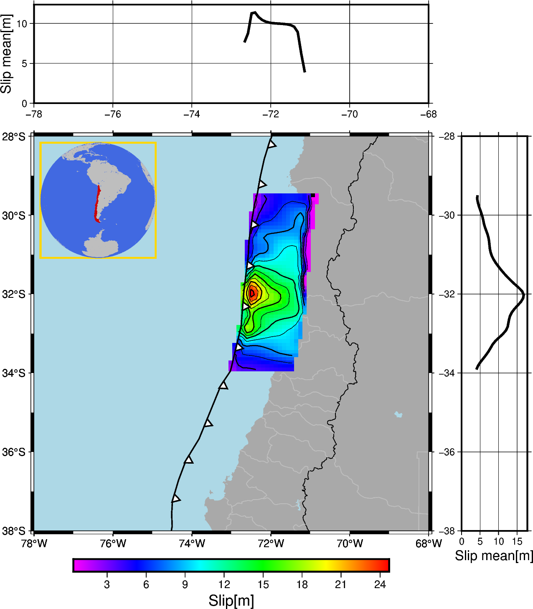

Note
Go to the end to download the full example code
Stochastic Slip generation - 2D Fault
Example of Karhunen Loeve expansion for stochastic generation of Slip distribution
# ## Caso 2D: Falla a lo largo de Chile Central
# Implementando el teorema de Karhunen-Loeve, en este, caso a una matriz de correlación que estará compuesta por:
# ### $C_{ij}=exp(-(d_{strike}(i,j)/r_{strike})-(d_{dip}(i,j)/r_{dip})) $
#
# En dónde $d_{strike}(i,j)$ y $d_{dip}(i,j)$ son estimados de la distancia entre subfallas i y j en el strike y dip respectivamente, y $r_{strike}$ y r_{dip} son los largos de correlación en cada dirección.
#
# Se define $d_{dip}(i,j)$ usando la diferencia en profundidad entre dos subfallas y el angulo de dip como
#
# $d_{dip}(i,j)=d_{depth}/sin(dip)$. Configurando $d_{strike}=\sqrt{d_{ij}^2-d_{dip}(i,j)^2}$
# Los largo de correlación serán el 40% del largo y ancho de la falla.
# ## Datos de la falla:
# Largo = 500 km
# Ancho = 200 km
import geostochpy
import numpy as np
import matplotlib.pyplot as plt
import pygmt
# Se ingresan las cantidades de subfallas, a lo largo del dip y a lo largo del strike, nx y ny
# In[2]:
nx=18
ny=50
width=180
length=500
dx=width/nx
dy=length/ny
# Primero, se cargarán lo datos del trench de Chile, para realizar una geometría paralela a ella
#
# También, se cargarán los archivos de Slab2, que contienen los parámetros geométricos de la zona de subducción de Sudamérica
# In[3]:
route_trench = geostochpy.get_data('trench-chile.txt') # route to trench file
lons_fosa, lats_fosa = geostochpy.load_trench(route_trench)
# load slab files
slabdep,slabdip,slabstrike,slabrake=geostochpy.load_files_slab2(zone='south_america',rake=True)
# Se realiza la falla a lo largo del trench, y se le da el valor más al norte de la falla.
#
# Luego, se deben tener las profundidades en cada subfalla, para ello se interpolan los datos de Slab2 con geostochpy.interp_slabtofault
# In[4]:
north=-29.5
lons,lons_ep,lats,lats_ep=geostochpy.make_fault_alongtrench(lons_fosa,lats_fosa,north, nx,ny,width,length)
[X_grid,Y_grid,dep,dip,strike,rake]=geostochpy.interp_slabtofault(lons,lats,nx,ny,slabdep,slabdip,slabstrike,slabrake)
# ##### Se crea la matriz de slips medios con geostochpy.matriz_media(mean,dep)
# In[15]:
## Creation slip models
# mean matrix
#
Mw=9.0
media,rigidez=geostochpy.media_slip(Mw,dx*1000,dy*1000,dep)
leveque_taper=geostochpy.taper_LeVeque(dep,55000)
# leveque_taper=leveque_taper/np.max(leveque_taper)
villarroel_taper=geostochpy.taper_except_trench_tukey(dep,alpha_dip=0.3,alpha_strike=0.3)
taper=leveque_taper*villarroel_taper
# taper=geostochpy.taper_except_trench_tukey(dep,alpha_dip=0.6,alpha_strike=0.4,dip_taperfunc=geostochpy.taper_LeVeque,strike_taperfunc=geostochpy.tukey_window_equal)
mu = geostochpy.matriz_medias_villarroel(media,taper)
# matriz de covarianza
C = geostochpy.matriz_covarianza_optimized(dip, dep, X_grid, Y_grid,length*1000,width*1000)
# for comcot simulation
Slip=geostochpy.distribucion_slip(C, mu, 20)
Slip,rigidez,Mo_original,Mo_deseado=geostochpy.escalar_magnitud_momento(Mw, Slip, dep, dy*1000, dx*1000,prem=True) # se escala el Slip a la magnitud deseada <--------- Slip final
# Hypocenter=geostochpy.hypocenter(X_grid,Y_grid,dep,length,width) se tiene en cuenta la rigidez con el modelo PREM incluido @fetched with Rockhound
# PLOT result
geostochpy.plot_slip_gmt([-78,-68,-38,-28],X_grid,Y_grid,lons_fosa,lats_fosa,Slip,10,10)
# geostochpy.plot_slip(X_grid,Y_grid,lons_fosa,lats_fosa,Slip,None,show=True)
# plt.imshow(taper_2d)
# plt.colorbar()
# fig.subplots_adjust(left=1, right=1.1, top=1.1, bottom=1)
# ax2=fig.add_subplot(122)
# im2=ax2.imshow(taper_2d)
# ax2.set_title('Taper 2d')
# # add space for colour bar
# fig.subplots_adjust(left=-0.5, right=1.1)
# cbar_ax = fig.add_axes([0.88, 0.15, 0.04, 0.7])
# fig.colorbar(im2, cax=cbar_ax)
# fig.show()
Total running time of the script: (0 minutes 23.139 seconds)